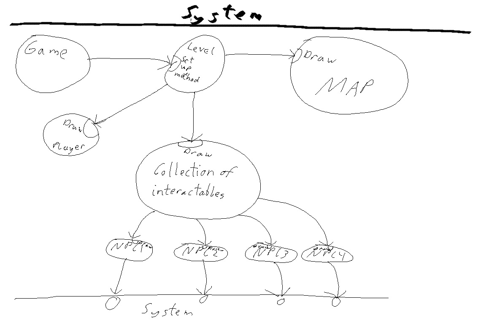

the game manager calls the level manager's setup method which will calls map's draw method, players draw method , and collection of interactables(COI) draw method. The COI will then call all NPC's and have them draw themselves. The player will see the map draw when they start up each level. All objects in the game will be drawn already. The powerups will not interact with the player until there is a collision between the player and object. 'Enemies' will appear to be drawn at the same time and will interact actively with the player.
[Index]